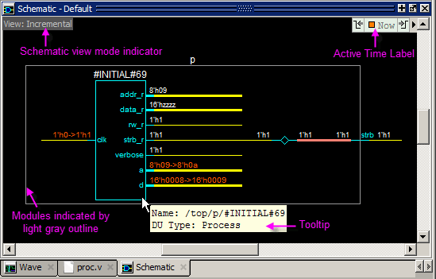
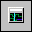
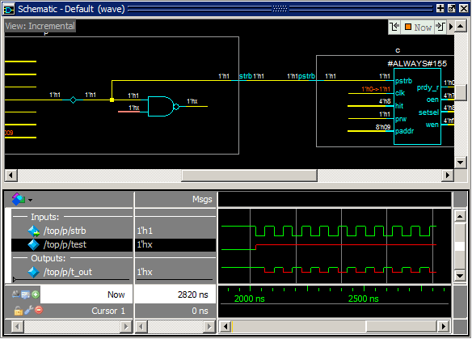
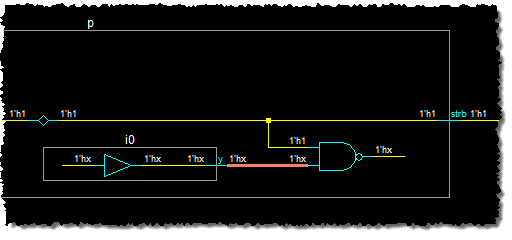
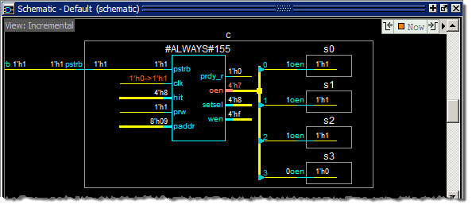
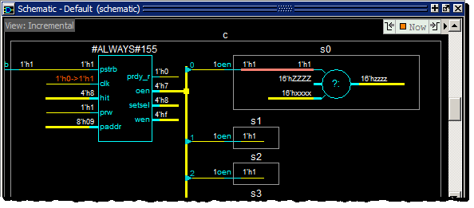
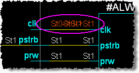
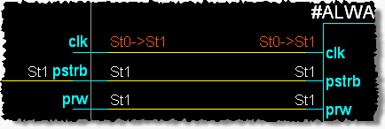
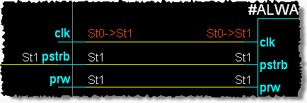

Exploring Connectivity
Procedure
- Open the
Schematic window.
- Select View > Schematic from
the menus or use the view schematic command at the VSIM prompt
in the Transcript window.
The Schematic window opens to the Incremental view.
- Select View > Schematic from
the menus or use the view schematic command at the VSIM prompt
in the Transcript window.
- Add a signal
to the Schematic window.
- Make sure instance #INITIAL#69 is selected in the Structure (sim) window.
- Drag the strb signal
from the Objects window to the Schematic window (Figure 1).Figure 1. A Signal in the Schematic Window
The Incremental view shows the strb signal, highlighted in orange. You can display a tooltip - a text information box – as shown in Figure 1 – by hovering the mouse cursor over any design object in the schematic. In this case, the tooltip shows details about the #INITIAL#69 module, denoted by the teal box.
Signal values are displayed at the ends of each signal net. You can toggle signals values on and off with the ‘v’ key on your keyboard when the Schematic window is active.
- Find the readers of the strb signal inside the p module.
- Find the
readers of the strb signal outside the p module.
When you mouse-over any signal pin the mouse cursor will change to a right-pointing arrow, a left-pointing arrow, or a double-headed arrow. If the arrow points to the right, you can double-click the pin to expand the signal fanout to its readers. If the arrow points left, you can double-click to expand the signal fanout to its drivers. Double-clicking a double-headed arrow will expand to drivers and readers.
- Find the
drivers of the test signal on the NAND gate
in the p module.
- Click the Show Wave button  to open the Schematic Window’s embedded Wave Viewer. You may need to increase the size of the schematic window to see everything
- Select the NAND gate in the schematic. This loads the wave signals for the inputs and outputs for this gate into the Wave Viewer and highlights the gate.
- Select the test signal
in the Wave Viewer. This highlights the test input
in the schematic (Figure 6).Figure 6. Select test signal
Notice that the title of the Schematic window is “Schematic -Default (wave)” when the embedded Wave Viewer is active, and “Schematic -Default (schematic)” when the Incremental View is active. In the next step we have to select a pin in the schematic to make the Incremental View and associated toolbar buttons active.
- Select the pin for the highlighted signal – test – in the schematic. This makes the schematic view active.
- Click the Expand net to all drivers icon.
- You can
see in Figure 7 that the driving process
of the test signal is an i0 module, which
is included in the p module.Figure 7. The test Net Expanded to Show All Drivers
- Open the
readers for signal oen on process #ALWAYS#155 in
the c module (labeled line_84 in
the VHDL version).
- Click the oen pin to make it active.
- Right-click
anywhere in the schematic to open the popup menu and select Expand Net To > Readers.
Figure Figure 8 shows the results.Figure 8. Signal oen Expanded to Readers
Notice, expansion of oen to its readers stops at the boundaries of the s0-s3 instances. To see inside any instance, double-click the oen net inside the instance to sprout a tri-state device as shown in Figure 9.
Figure 9. Sprout oen in the s0 Instance
- Continue exploring the design with any of the methods discussed above – double-click signal pins or nets, use the toolbar buttons, or use menu selections from the right-click popup menu.
- The signal
values for the signals may not be easily distinguished when the
values at each end of the net overlap.Figure 10. Signal Values Overlapped
- Click the
Regenerate button
 to redraw the Schematic with all design elements,
signal values, and pin names clearly displayed (Figure 11).Figure 11. Signal Values After Regenerate
to redraw the Schematic with all design elements,
signal values, and pin names clearly displayed (Figure 11).Figure 11. Signal Values After Regenerate - When you are finished, click and hold the Delete Content button until the popup menu appears, then click Delete All to clear the schematic viewer.
- Click the Show Wave button to close the embedded Wave Viewer.